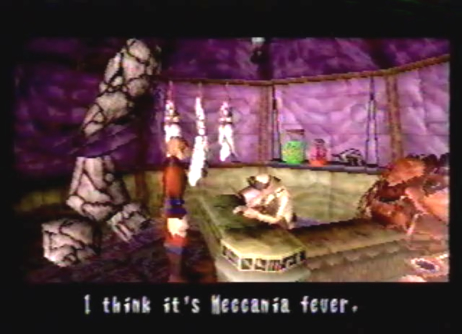
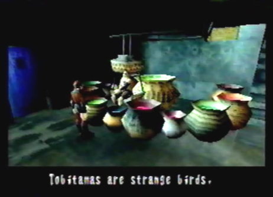

Diary Entry 18: Caravan Visit 3 The Desperate Search for the Tobitama Rock After escaping the Underground Ruins of Uru, I decided I needed a break and returned to the caravan, to spend some time with Fei. Upon entering her tent, Kou told me that she was looking after Enkak, who had been stricken with Meccania fever. She said his fever was very bad and wouldn't go down. I rushed over to An'jou's tent to find Enkak asleep and Fei trembling over him. She told me he had become ill and wouldn't wake up. I checked his head, he was burning up! If someone didn't do something soon, he wasn't going to last long. I left Fei and went to talk to Baicah about Enkak's fever. He to, said it must be Meccania fever. He said, if he were to get his hands on a rock-like secretion called a Tobitama Rock, found inside a Tobitama nest, he would be able to make an antidote. He also told me that An'jou had already ventured off on a desperate search to find the Tobitamas. The chance of him finding one he said, was next to nothing. I knew I had to be the one to help Enkak, I had to do something. I couldn't just let him die. I could find the Tobitama Rock in no time, thanks to my dragon, that is, if I knew where to look. Where would I start looking, I told myself? Who could I ask, to find out more information about Tobitamas? Just as I began to slump into a void of hopelessness, I remembered the all knowing Juba! If anyone could help me, he most certainly could. I rushed over to the Village of Zoah, without a moments notice! During the night, I made my way to Juba's bar. I had to pay 20 Dynes and order one of his illuminating drinks of course, for him to even talk to me. Once I downed the horrible drink, my face turned green as I desperately pleaded with Juba to give me any information he knew about Tobitamas. He told me to calm down, it was no problem. He said the Tobitamas had supposedly returned to Uru, since the water level had risen. At a young age, these strange birds fly away and if all the young return to the nest at the same time, they abandon it, he told me. I thanked him, and hurried to Uru, as fast as the dragon could take me there. When we arrived, we ran into one of the baby Tobitamas right away. He circled around us, wanting us to bring him to his mother. I had to find the nest. We proceeded to fly north and eventually found the mother Tobitama, sitting at her nest. The baby Tobitama happily flew by his mothers side. There must be more, I thought to myself. Flying south from the nest, lead us to yet another baby Tobitama, which we also brought back to the nest. I knew there had to be more. While flying to the right of the cave entrance and towards the cliffs, we found the last baby Tobitama. Upon bringing him back to his mother, they all abandoned the nest, just like Juba said. We found the rock-like secretion laying in the nest, that the Tobitamas had left behind. Next, we headed back to Uru Deep North. We then accessed the green symbol next to the Black Ruins and entered the underground ruins of Uru. I wanted to get some items that were previously unattainable without my dragon. We made our way to B4F and acquired multiple items from a row of 9 item containers, that I previously was unable to open with the Floater. The dragon however, had no problem blasting open the item containers with its lock-on lasers. After B4F, I headed back to the Underground Dome and flew high above, to find a door we weren't able to get into on our last visit, B2F North. Inside, I found D Unit 07 and a powerful healing item called Ambrosia. Soon after, we headed off to B2F East, to take a look at the Prototype Dragons once more, before exiting the facility. While attempting to cross over Water Tank # 3, the dragon was pulled downward and we descended to a new floor, B?F. The gate in front of us relayed a message telling us Bio Equipment was prohibited. It meant no dragons. I left my dragon behind and told him to meet me at the exit. I explored a series of complex branching paths. One of the paths took me to another unknown floor, B??F, where I found some cool items. All of the other paths eventually took me to B3F East. It was here that we encountered a more intelligent form of Absorbora, near the descending slope leading up to the Water Tank # 1 and # 2 Switch. They threw around a bomb back and froth between each other. We quickly destroyed them before the bomb exploded. After our business was complete within the underground ruins of Uru, we headed back to B1F and with the Dome Gate Key in hand, we were able to exit via the giant gate. It was then that I realized I had just done something very stupid. Enkak was dying a slow death back at the caravan and there I was, exploring the underground ruins of Uru at my own leisure. With a feeling of incredible anxiety, I rushed my behind over to Baicah and sold him the Tobitama Rock. I hoped it wasn't too late! He was ecstatic that I had actually found the Tobitamas. Baicah could now make the antidote that would hopefully save Enkak's life. As thanks, he gave me five Speed Chips. As I waited in anticipation, the darkness of night soon engulfed the sky. I found Raul sitting by the fire, talking to himself. He was worried about An'jou and wondered if he was going to be okay. Raul was the only hunter left to defend the people of the caravan. He must have been very stressed out. I waited until morning and went back to check how Baicah's antidote was coming along. He had already completed it and given it to Enkak during the night. He said it looked as if the boy was going to make it. With great excitement, I ran over to An'jou's tent and checked up on him. His fever was going down and it seemed that he would wake up soon. Fei was surprised and relieved that I had actually saved Enkak's life. I walked away, took one last look at Enkak and knew I had done a good deed. Poor Enkak, I hope he'll be okay. Well, I'll make sure to come back later. I headed off to camp to take a much needed rest. |
|
| Divine
Overview |
1. Upon returning from the Underground Ruins of Uru, go visit the caravan. Enter Anjou's tent. You will find that Enkak has become fatally ill. Come on, you can't let him die, you have to be the all around good guy that you are and find a way to save him! |
 2. Baicah will tell you Enkak has been stricken with Meccania fever. He says, if he were to get his hands on a rock-like secretion called a Tobitama Rock, found inside a Tobitama nest, he would be able to make an antidote. |
 3. Need some more information? Well, Juba's your man! Pay 20 Dynes and down one of his horrible illuminated drinks. You can then ask him about Uru and the Tobitamas. He tells you that the Tobitamas have returned to Uru since the water level rose. He also says once all of its young return to the nest, they all fly away. |
|
4. Go to Uru and you will immediately find a baby Tobitama straight ahead. Lock-on to the flying creature and shoot a laser at him. The baby Tobitama will circle around you, wanting you to bring him to his mother. |
5. Bring the Baby to his mother. If you're having trouble finding the nest, its location as well as the baby Tobitama locations, can be found on the map. You will have to find 2 more baby Tobitamas and also bring them back to the nest. Seek out their locations or just refer to the map. |
6. While seeking out the baby Tobitama locations, fly below and to the right of the Tobitama nest, to find an area full of small trees. Flying near this area will trigger a battle against rare enemies called Kolbas. |
7. When 2 gauges fill up, immediately destroy them with Armageddon. You will receive a Macran Jewel, an item you will need later on. Note, Kolbas only appear during the daytime and once you fight them twice, they won't appear around the tree area until you exit the map and come back. They are also a good enemy to fight if you want to level up a bit. |
8. Once the 3 baby Tobitamas are back at the nest, they will all abandon it and fly away, just like Juba said. |
9. You will now be able to lock-on to the nest and receive the rock-like secretion left behind by the Tobitamas, called the Tobitama Rock. |
10. Before going back to the caravan, we need to take care of some unfinished business down below, at the Underground Ruins of Uru. Head back to Uru Deep North and lock-on to the green symbol to reenter the underground facility. |
11. Make your way over to Water Tank # 3 on B2F East, right next to the Prototype Dragon room. Enter the tank. |
12. Instead of arriving at B3F East you will now be at B?F, a new floor to explore. |
13. You will have to leave your dragon behind and explore with the Floater. |
14. A series of complex branching paths will have to be thoroughly explored. Refer to the map, to determine what items you can find and what path goes where. |
15. Most likely, At the end of each branching path you explore, you will taken to B3F East. |
16. While on floor B3F East, If you fly near the descending slope that leads up to the Water Tank # 1 and # 2 Switch, you will trigger a battle against the rare enemies Absorboracs. |
17. The Absorborac is an advanced form of Absorbora with heightened intelligence. They will throw a very dangerous explosive bomb back and forth between each other, sort of like a hot potato game. If you wait too long, the bomb explodes, destroying them all! It's pretty funny. |
18. Not all of the branching paths on floor B?F take you to B3F East. One of the branching paths will actually take you to a new location called B??F. |
|
19. Once on floor B??F, you will find 6 item boxes up for the taking. They contain some pretty cool items. |
20. When you've fully explored B?F to the fullest, return to the Underground Dome, head to B3F West and take the elevator to B4F. Remember that row of 9 item boxes you couldn't acquire on your first visit, well now you can have an item box destroying party and acquire all of the items. Amongst the items, you will find D Unit 08. |
21. Return to the Underground Dome and head up into an area you haven't explored yet called B2F North. |
22. In the first chamber, you will find D Unit 07. |
23. In the second chamber. you will find an Ambrosia, the best healing item in the game. |
24. Well, you've cleaned out the Underground Ruins of Uru. Go back to B1F. With the Dome Gate Key in your possession, you can now exit via the BIF Dome Gate. This will take you to the World Map. How convenient! |
25. Exploring the Underground Ruins of Uru, WHAT WERE YOU THINKING! Enkak is dying a slow death from Meccania fever! Hurry your behind over to the caravan and sell the Tobitama Rock to Baicah. |
26. The darkness of night will soon engulf the sky. Raul can be found sitting by the fire. He's worried about An'jou, who went off by himself to find the Tobitamas. He's the only hunter left, to defend the people of the caravan! |
27. Wait until morning and go check how Baichas progress on the antidote is going. He had already given the antidote to Enkak during the night and it looks as if the boy is going to make it. Now don't you feel good, knowing you did a good deed. |
28. Go to An'jou's tent and check up on Enkak. His fever is going down and it seems he will wake up soon. Fei is happy and relieved that you actually saved his life. You turn your back, look at her briefly, put a arrogant smirk on your face and walk away looking cool. |
29. Your next destination is the camp site. Someone is there waiting for you. |